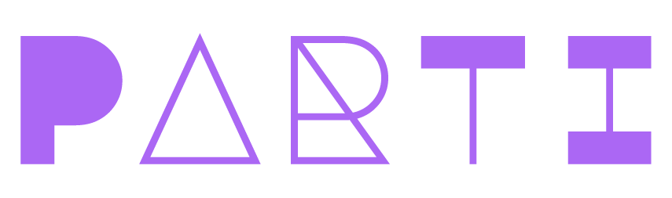

Internal review
PARTI reviews the role, requests, constraints, and approved budget.
Work with PARTI

Intake received
PARTI now has one shared record of the role discussion, your priorities, and your working preferences. The team will review it internally before discussing proposed terms.
Reference saved